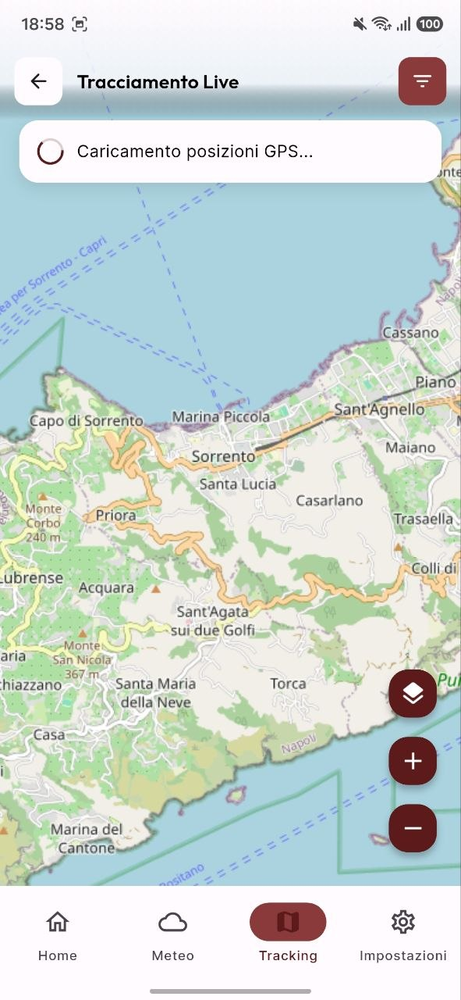
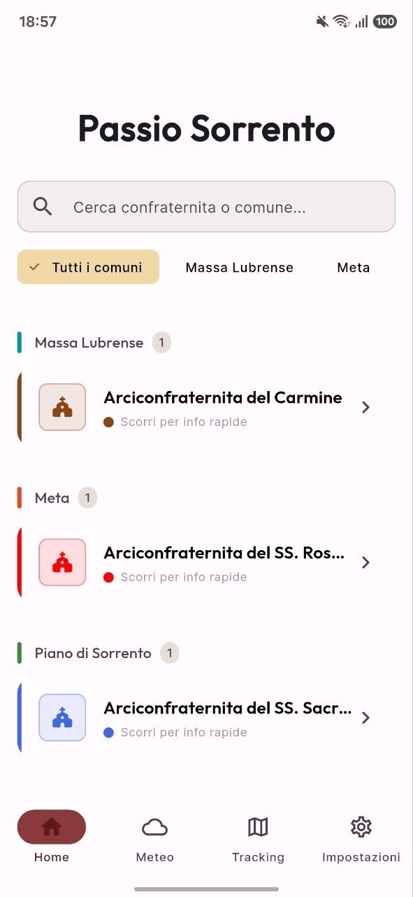
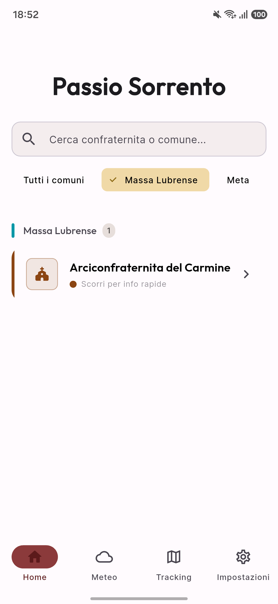
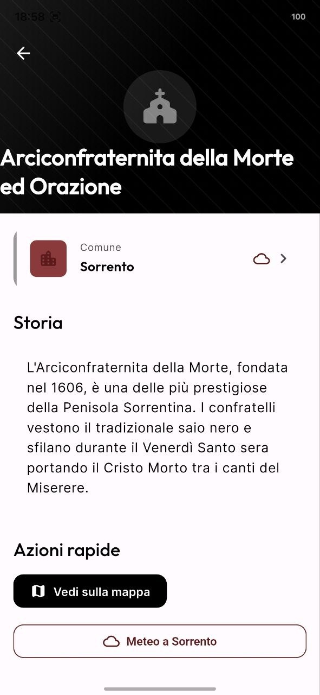
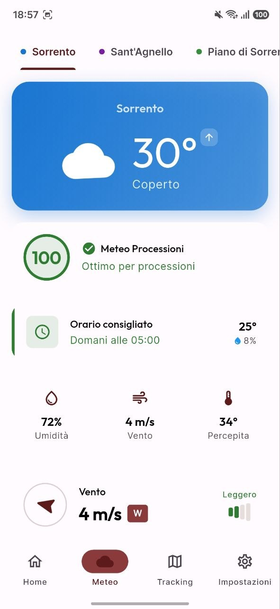

L'applicazione ufficiale per seguire in tempo reale il corteo degli Incappucciati. Scopri itinerari, orari, previsioni meteo e la secolare storia delle Confraternite.

Interfaccia minimale ed elegante, pensata per una consultazione rapida e chiara anche durante i cortei notturni.

Tutti i cortei organizzati per comune, con indicazione dello stato in tempo reale e orari.
Posizione in tempo reale del corteo, velocità di marcia e percorso lungo le strade peninsulari.

Stemma nobiliare, cenni storici, colore del saio e tradizioni secolari di ciascun sodalizio.

Itinerario completo via per via con orari di partenza e rientro previsti.

Previsioni costantemente aggiornate per ciascun comune peninsulare con focus pioggia.
Un connubio perfetto tra la solennità delle tradizioni secolari e la precisione del tracciamento GPS in tempo reale.
Aggiornamento automatico costante della testa del corteo direttamente dai trasmettitori dei capofila.
Scopri l'origine dei canti del Miserere, il significato dei simboli e la storia dei sodalizi.
Monitoraggio meteo orario e probabilità di pioggia per pianificare la partecipazione in sicurezza.
Tutti i riti e le processioni solenni monitorati nei sei comuni peninsulari.